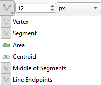

Praktikum 11 Andmekihtide ühendamine
11.1 Andmestike ühendamine
Kui meil on olemas andmestik, milles ruumilist infot väljendavad ainult mingid tekstilised tunnused (nt riikide, maakondade, linnade, talude vm nimed), saame nende konkreetsete asukohtade määramiseks, kaardil kuvamiseks ning ruumiliseks analüüsimiseks kasutada ära vabalt kättesaadavaid ruumiandmeid (nt Maa-ameti ruumiandmeid).
Vaatame esmalt varasemast oluliselt suuremat 19. sajandi vallakohtute andmestikku. See on osa Rahvusarhiivi ühisloomeprojektist, mille käigus on praeguseks sisestatud üle 90 000 vallakohtuprotokolli, mis kajastavad muuhulgas näiteks laenusid ja võlanõudeid, varavastaseid kuritegusid, pärimisasju, kahjutasunõudeid, aga ka näiteks sõimu ja vägivalda ning muid üleastumisi. Siin praktikumis kasutatavas andmestikus on umbes 25 000 protokolli andmed.
Tabel näeb välja selline:
Selleks, et protokollide andmeid kaardil kuvada, peame maakondade, valdade või kihelkondade nimede abil ühendama tabeli mingite ruumiandmetega. Kasutame siin kõige suuremat üldistuse astet ja kasutame ühendamiseks maakondi.
Esmalt laadime aga andmestiku QGISi: Layer → Add Layer → Add Delimited Text Layer → valime faili vallakohtud_RA.csv, tulpade eraldaja on tabulaator (Tab), linnuke on kastide ees First record has field names ja Detect field types, Geometry Definition on No geometry → Add → Close.
Mitu eri maakonda andmestikus kokku on?
Tuleb meeles pidada, et tegemist on põhiliselt 19. sajandi andmetega. Seega ei ühti vallakohtuprotokollide maakonnapiirid tänapäevaste maakondade omadega ning peame kasutama ühendamiseks Maa-ameti ajaloolise haldusjaotuse andmeid.
Joonis 11.1: Maakondade piirid 19. ja 21. sajandil (allikas: Maa-amet)
Laadime alla Maa-ameti ajaloolise haldusjaotuse 1917. aasta maakondade polügoonid ja avame need QGISis.
Kontrollime, kas vallakohtute ja Maa-ameti maakondade nimed klapivad!
11.1.1 Lisaülesanne
Maa-ameti ajalooliste maakondade kaardil puudub Võrtsjärv. Selleks, et see sinna lisada, on vaja teha järgmised sammud.
- Valime maakondade vektorkihile aluskaardi, kus oleks Võrtsjärv peale märgitud. Asetame selle ajalooliste maakondade kihi alla ning ajalooliste maakondade kihi teeme piisavalt läbipaistvaks, et aluskaart näha oleks.
- Teeme uue ajutise kihi nimega vortsjarv: Layer → Create layer → New Temporary Scratch Layer. Geometry type olgu Polygon, CRS olgu EPSG:3301. Teeme kihi aktiivseks, vajutame kihi muutmiseks kollasel pliiatsil, valime tööriista Add Polygon Feature ja digiteerime aluskaardilt Võrtsjärve polügooni. Salvestame ja vajutame muutmise pliiatsist kinni.
- Kui kasutame aluskaardina mõnd vektorkihti, saab palju kiiremini ja täpsemini digiteerida, kui lülitame haakimise tööriistamenüüs (Snapping Toolbar) sisse lisaks tavalisele haakimisele ka tööriista Enable Tracing ning valid haakimiskohtadeks nii käänupunktid (Vertex), jooned (Segment) kui ka joonte kesk- ja lõpupunktid (vastavalt Middle of Segments ja Line Endpoints). Sel juhul saad ajalooliste maakondade kihi korraks üldse välja lülitada ning võid digiteerida lihtsalt Võrtsjärvega vektorkihilt.

- Kui kasutame aluskaardina mõnd vektorkihti, saab palju kiiremini ja täpsemini digiteerida, kui lülitame haakimise tööriistamenüüs (Snapping Toolbar) sisse lisaks tavalisele haakimisele ka tööriista Enable Tracing ning valid haakimiskohtadeks nii käänupunktid (Vertex), jooned (Segment) kui ka joonte kesk- ja lõpupunktid (vastavalt Middle of Segments ja Line Endpoints). Sel juhul saad ajalooliste maakondade kihi korraks üldse välja lülitada ning võid digiteerida lihtsalt Võrtsjärvega vektorkihilt.
Joonis 11.2: Vektorkihi järgi digiteerimine
- Valime menüüst Vector → Geoprocessing Tools → Difference. Input layer olgu ajalooliste maakondade vektorkiht ning Overlay layer loodud Võrtsjärve kiht. Difference alt vali Save to File ja salvesta kiht nt nimega Maakond_1917_Vorts. Vajuta Run ja Close. Kui saad veateate, siis mine Settings → Options → Processing → General → Invalid features filtering, topeltkliki tekstil Stop algorithm… ja vali selle asemel Do not filter (better performance). Seejärel proovi uuesti Difference tööriista.
- Kustuta vanad maakondade kihid ja Võrtsjärve ajutine kiht ning nimeta Maakond_1917_Vorts ümber nimega Maakond_1917.
Joonis 11.3: Lisatud Võrtsjärv
Andmete ühendamiseks on kolm viisi.
- Esiteks võime ühendada csv-tabeli vektorkihiga. Sellisel juhul säilib shapefile’i struktuur, milles on 9 rida (iga maakonna kohta üks) ning csv-failist lisatakse igale reale ainult mingid keskmised näitajad. Võime siin näiteks ühendada shapefile’iga iga maakonna protokollide keskmise pikkuse tähemärkides.
- Teiseks võime ühendada vektorkihi ruumiinfo csv-tabeliga. Sellisel juhul säilib csv-faili struktuur, milles on üle 25 000 rea (iga protokolli kohta üks) ning iga rida saab juurde koordinaadid. Võime siin näiteks ühendada csv-failiga iga maakonna keskpunkti (tsentroidi) koordinaadid.
- Kolmandaks võime ühendada vektorkihi ruumiinfo csv-tabeliga nii, et säilitame shapefile’i vektorandmete struktuuri, aga ühtlasi saame lisada ruumiinfo eraldi ka kõikidele tuhandetele ridadele. See tekitab kõige mahukama andmestruktuuri ning võib nõuda küllalt palju arvutuslikku ressurssi.
11.1.2 CSV info ühendamine vektorkihiga
- Esmalt on meil vaja pikast, paarikümne tuhande kirjega CSV-tabelist saada tabel, kus oleks iga maakonna kohta selle maakonna kõikide protokollide keskmine pikkus tähemärkides. Selleks saame luua näiteks uue virtuaalse kihi ning kasutada SQL-i päringut. Lähme Layer → Create Layer → New Virtual Layer, nimetame kihi nt nimega keskmised, sisestame Query väljale pildil näidatud SQL-i päring ning vajutame Add.
Joonis 11.4: Virtuaalse kihi loomine
- Sama asja saab teha ka nt Database → DB Manager → SQL Window → päring
SELECT maakond, AVG(number_of_characters) FROM vallakohtud_RA GROUP BY maakond;→ Execute → Load as new layer → Load.
- Põhimõtteliselt saab info kätte ka nii: Processing → Toolbox → Vector analysis → Statistics by categories. See loob uue kihi Statistics by category, mis annab ülevaate mingist tunnusest (nt tähemärkide arv) teise tunnuse (maakondade) põhjal grupeerituna. Väljundi tulbas mean on keskmine tähemärkide arv iga maakonna kohta.
- Nüüd saame ühendada kihi keskmised ja ajalooliste maakonnapiiride kihi. Selleks saab kasutada nt jaotist Joins, mida oleme juba ka varem kasutanud.
- Teine viis kihte ühendada on valida Processing → Toolbox → Vector general → Join attributes by field value. See tekitab uue kihi, vaikimisi nimega Joined layer, kus ei ole olemasolevat ja lisatud infot enam eristatud.
Joonis 11.5: Andmestike ühendamine Processing Tools’iga
- Nüüd on meil maakonnapiiride kiht, mille atribuuttabelis on ka infot selle kohta, kui pikad vastava maakonna vallakohtuprotokollid keskmiselt on. Kasutame seda tulpa selleks, et värvida maakonnad eri tooni (pikemate protokollidega maakonnad tumedamalt, lühematega heledamalt). Selleks kasutame juba eelmistes praktikumides näidatud viise (Symbology → Graduated jne).
11.1.3 Vektorkihi info ühendamine CSV-ga (punktid)
- Proovime nüüd ruumiinfot salvestada CSV-kihti nii, et koordinaadid oleksid tabelis atribuutidena eraldi tulpades.
- Ühendame vallakohtuprotokollide csv-failiga iga maakonna keskpunkti (tsentroidi) koordinaadid, nt selleks, et protokolle kaardil kuvada. Selleks tuleb meil esmalt leida maakondade polügoonide keskpunktid.
- Teeme aktiivseks kihi Maakond_1917 → Vector → Geometry Tool → Centroids → jätame vaikeväärtused ning vajutame Run. Maakondade kihile ilmuvad nüüd uuel kihil polügoonide keskpunktid.
Joonis 11.6: Polügoonide keskpunktid
- Järgmiseks lisame tekkinud kihi Centroids atribuuttabelisse punktide x- ja y-koordinaadid: teeme kihi aktiivseks → Vector → Geometry Tools → Add Geometry Attributes, jätame jällegi vaikeväärtused ning vajutame Run ja Close. Tekkis uus kiht Added geom info. Nimetame selle ümber nt koord_keskpunktid.
- Kui me ei taha, et iga kord jälle uus kiht tekitatakse, võime atribuudid koordinaatidega lisada ka otse Centroids kihi atribuuttabelisse, kui kasutame avaldisi. Näiteks x-koordinaadi tulba tekitamiseks võtame lahti Field Calculatori → Create a new field, Output field name: x, Output field type: Decimal number (real) → avaldise lahtrisse kirjutame
$xja vajutame OK. Samamoodi saab luua y-koordinaadi tulba ($y).
- Kui me ei taha, et iga kord jälle uus kiht tekitatakse, võime atribuudid koordinaatidega lisada ka otse Centroids kihi atribuuttabelisse, kui kasutame avaldisi. Näiteks x-koordinaadi tulba tekitamiseks võtame lahti Field Calculatori → Create a new field, Output field name: x, Output field type: Decimal number (real) → avaldise lahtrisse kirjutame
- Ühendame nüüd CSV-kihi maakondade nimede järgi keskpunktide koordinaatide kihiga. Üks võimalus on teha jälle paremklikk kihil vallakohtud_RA → Properties → Joins → Add new join. Teine võimalus on kasutada taas hoopis Processing → Toolbox → Vector general → Join Attributes by Field Value, ent jälgime, et praegusel juhul oleks nüüd Join type’iks seekord valitud one-to-many, mis jätab alles kõik vallakohtute andmestiku read. Kõik ühe maakonna protokollid saavad ühesugused koordinaadid.
Joonis 11.7: Andmestike ühendamine
- Võiksime nüüd loodud (üle 25 000 reaga ja koordinaatidega) kihi salvestada uue csv-failina ning salvestatud faili uuesti geoinfoga varustatud csv-failina sisse lugeda. Selle asemel aga võib kasutada ka Processing → Toolbox → Vector creation → Create points layer from table.

Joonis 11.8: Koordinaatidega csv-faili muutmine punktikihiks
- Nüüd on meil kaardil üksteise all igas maakonnas sadu või tuhandeid punkte, ehkki vaikimisi näeme, justkui oleks igas maakonnas ainult üks punkt. Selleks, et protokollide jaotumist maakondades visuaalselt veidi paremini näidata, võime näiteks filtreerida välja ainult protokollid, mille teemaks on (kas ainult või muuhulgas ka) “Sõim ja vägivald” ning teha heatmap’i.
Joonis 11.9: Heatmap protokollidest maakondades
Ilmselt ei ole aga selline visualiseerimine tegelikult kõige parem viis protokollide jaotumist näidata. Heatmap peaks visualiseerima mingeid üleminekuid. Kuna meie aga vaatleme andmeid maakonna tasandil, on meil sisuliselt ainult 9 koordinaadipaari, mis tähendab, et jätame kõrvale olulise hulga teadaolevast geograafilisest varieerumisest. Niisiis, kui meil just tingimata pole sellist andmestikku vaja, oleks parem võimalusel kasutada väiksemaid haldusüksusi (nt kihelkondi) või visualiseerida maakondi lihtsalt nendesse jäävate punktide/protokollide arvu kaudu.
Joonis 11.10: Heatmap protokollidest kihelkondades
11.1.4 CSV ja vektorkihi ühendamine polügoonidega vektorandmeteks
Kolmas viis, mis jätab alles nii kõik CSV-andmestiku vaatlused (ühest kohast mitu vaatlust), ent võimaldab ühendatud andmestikku hoida polügoonidega vektorformaadis (mitte lihtsalt tabelina, milles punktide koordinaadid on atribuudid), saame kasutada sedasama ülal mainitud Join type = one-to-many võimalust. NB! Kuna tekitame sisuliselt üle 25 000 polügooni, võib protsess võtta palju aega.
- Valime uuesti Processing → Toolbox → Vector general → Join attributes by field value.
Joonis 11.11: CSV ja vektorkihi ühendamine (polügoonidega) vektorandmeteks
- Tekib uus kiht Joined layer, milles iga vallakohtuprotokoll on geograafiliselt seotud mõne Eesti maakonna polügooniga.
Võid proovida teha sama kihelkondade andmetega.
11.2 Geokodeerimine
Täpsemate asukohtade määramiseks (nt aadresside jaoks) saab kasutada geokodeerimise teenust. Geokodeerimine on aadressi või kohanime seostamine geograafiliste koordinaatidega. Tagurpidi geokodeerimine omakorda võimaldab koordinaatidest tuletada aadressid ja kohanimed.
Maa-amet pakub tasuta geokodeerimise teenust. Sealjuures on võimalik geokodeerida nii ainult üht aadressi/kohta korraga kui ka tervet hulka andmeid (massgeokodeerimine).
Geokodeeri alustuseks näiteks enda, oma sõbra, vanemate vt aadress. Saad väljundit kuvada nii aadressiobjektide kaardirakenduses kui ka erinevates formaatides alla laadida. Kas jääd tulemuse täpsusega rahule?
Massgeokodeerimise sisendiks sobivad CSV- või XLSX-formaadis andmetabelid. CSV-formaadi puhul peab välju eraldama semikoolon. Vaatame seda lühikese näite abil, kus geokodeerime Tartu Ülikooli valdkondade dekanaatide ametlikud aadressid.
- Kodeerimisel peab ära määrama, millises tulbas paikneb sisendaadress, mida geokodeerima hakatakse. Antud juhul on selleks tulp Aadress.
- Seejärel saab valida,
- milliste objektide hulgast vasteid otsitakse. Meid huvitavad siin eeskätt õppehooned, aga veidi ebatäpsemate aadresside puhul (talud, tänavad, maakonnad, linnad jne) tasub otsida ka teiste objektide seast;
- kuidas vasteid esitatakse. Eeskätt puudutab see aadresse, millel on kas mitu vastet või millele täpset vastet ei leita.
- milliste objektide hulgast vasteid otsitakse. Meid huvitavad siin eeskätt õppehooned, aga veidi ebatäpsemate aadresside puhul (talud, tänavad, maakonnad, linnad jne) tasub otsida ka teiste objektide seast;
- Lõpuks saab valida,
- milliseid ruumiandmete tulpasid väljundisse soovime (nt kas kõiki aadressiobjektide id-sid ja tasemeid);
- kas tahame, et andmeid töödeldaks sünkroonselt, mispuhul saame protsessi jälgida kohe samas veebilehitseja aknas, või asünkroonselt, mispuhul andmed laetakse serverisse ning kasutajale saadetakse mõne aja pärast tulemus meilile. Viimast tasub teha eeskätt siis, kui andmestik on mahukas.
- milliseid ruumiandmete tulpasid väljundisse soovime (nt kas kõiki aadressiobjektide id-sid ja tasemeid);
Geokodeerimine töötab väga hästi tänapäevaste aadressidega.
Vaatame aga nüüd ka natuke vanemaid andmeid, nimelt Rahvusarhiivi kaudu kasutatavat Tartu Ülikooli ja Eesti Ajalooarhiivi andmebaasi “Album Academicum 1918–1944”, mis koondab matrikliraamatutele jt allikatele tuginedes infot Tartu Ülikooli immatrikuleeritud üliõpilastest aastatel 1918-1944 (vaata lähemalt). Kuna andmestik ise on üpris mahukas, sisaldades infot enam kui 20 000 tudengi kohta, siis vaatame siin ainult kahe väga levinud perekonnanimega (Tamm ja Saar) üliõpilaste andmeid ning võrdleme nende perekonnanimedega üliõpilaste päritolu. Naisüliõpilaste andmete puhul ei pruugi võrdlus olla väga täpne, kuna andmestikus sisalduvad ka need kirjed, kus Tamm või Saar on saadud perekonnanimeks abiellumisel.
Oleme veidi algandmestikku täiendanud ning lisanud standardiseeritud sünnikoha tulbad, kus andmebaasis kajastatud sünnikohtadel on lühendid lahti kirjutatud ning erinevate tasemete vahele on lisatud komad.
Põhimõtteliselt võib proovida ka praktikumis tabelit tamm_saar_koond.csv massgeokodeerimisse saata (sel juhul tasub otsida ilmselt ainult haldus- ja asustusjaotuse klassifikaatorist, tulemuste esitamisel tahaksime otsida ka ajaloolistest andmetest ning kui vaja, siis üldistada täpsemat aadressi üldisemaks), ent kui teeme seda kõik koos, võib server saada üle koormatud. Seepärast oleme lisanud praktikumi materjalidesse ka juba geokodeeritud faili tamm_saar_koond_geokod_std2.gpkg, mis kasutas aadressidena tulpa Sünnikoht_std2 (kus on mitu kohanime tasandit, ent kustutatud on liiginime näitavad sõnad, nagu vald, kihelkond, maakond jms), ja faili tamm_saar_koond_geokod_std3.gpkg, mis kasutas aadressidena tulpa Sünnikoht_std3 (kus on ainult kõige madalama taseme kohanimi).
Ülesanne
- Laadime geokodeeritud andmestikud vektorkihtidena QGISi (NB! Arvestame kodeeringut valides, et tegemist on Maa-ameti failidega);
- valime andmetele sobiva aluskaardi (nt Maa-ameti ajalooliste aluskaartide hulgast, ent seekord WFS-teenusena);
- värvime emma-kumma kihi punktid selle järgi, kas tegemist on Tamme- või Saare-nimeliste üliõpilastega (tulp pk). Võib kasutada ka erinevaid sümboleid. Teise kihi teeme nähtamatuks;
- viime punktide läbipaistvuse 30% peale.
Väga selget geograafilist jagunemist nende perekonnanimedega ei näe. Vahest võiks vaadata ka selgemalt murdetaustaga nimesid, nt Lõhmus-Niin-Pärn-Pähn, Pedajas-Mänd vmt.
Vaatame nüüd ka atribuuttabeleid.
Kuna tegemist on ajaloolise andmebaasiga, on paljud kohanimed vahepeal muutunud, samuti on muutunud haldusjaotus. Vaatame geokodeeritud tabeleid ning püüame välja selgitada, milliste kohtadega on geokodeerijal probleeme olnud. Eeskätt aitab selle puhul puuduvate aadresside ridade tuvastamine ning sisend- ja täisaadressi tulpade võrdlus.
Milliseid probleeme võib märgata?
Kui tahame näiteks uurida ridu, kus standardiseeritud sünnikoha maakond ja normaliseeritud aadressi maakond ei klapi, võime kasutada objektide valimisel päringut NOT "Sünnikoht_std" ILIKE regexp_replace("NORMADDRESS", '(.*) maakond.*$', '%\\1maa%'):
regexp_replace("NORMADDRESS", '(.*) maakond.*$', '%\\1maa%')võtab tulba NORMAADRESS ja jätab seal alles ainult selleteksti, mis tuleb rea alguses kuni tühiku ja sõnani maakond (nt Tartu maakond, mis iganes täpsustusi siin veel tuleb), lisab teksti lõppu tähed maa ja teksti täitsa algusesse ja lõppu%, misILIKEoperaatori juures tähendavad ükskõik mida ükskõik kui palju (nt %Tartumaa%).
"Sünnikoht_std" ILIKE regexp_replace("NORMADDRESS", '(.*) maakond.*$', '%\\1maa%')küsib ridu, milles tulp “Sünnikoht_std” sisaldaks samasugust väärtust nagu NORMAADRESSI tulbast tehtud väärtus (nt %Tartumaa%).
- Operaator
NOTeitab tulemust ehk kõik read, mis enne said valitud, saavad nüüd mittevalituks ja valituks saavad hoopis read, kus see tingimus ei vasta tõele (maakonna nimed kahes tulbas ei klapi).
Maa-ameti geokodeerimise teenus ei ole niisiis mõeldud ajalooliste andmete jaoks, ent ühes muude aluskaartide ja käsitsi kontrollimisega võib siiski pisut tööd lihtsustada.
11.3 Ruumiandmete omavahel ühendamine
Siiamaani vaatasime andmeid, kus ainult üks andmekihtidest sisaldab ka ruumiandmeid. Kui meil on näiteks aga kaks vektorkihti, mis mõlemad sisaldavad ka ruumiandmeid, saame ühendada andmeid ka ilma ühise atribuudita, koordinaatide põhjal.
- Ühendame näiteks maakondade shapefile’i ja geokodeeritud Tamme-Saare andmestiku. Selleks valime Processing → Toolbox → Vector general → Join attributes by location. Siin kohtame taas geomeetrilisi predikaate.
- equals - kahel objektil täpselt samad koordinaadid
- intersects - kaks objekti katavad vähemalt mingeid ühiseid koordinaate (sh nt servi)
- crosses - kaks objekti lõikuvad nii, et lõikumiskoht on madalama dimensionaalsusega kui objektid ise
- overlap - kaks objekti katavad mingeid ühiseid koordinaate, aga ei ole täpselt ühesugused, kohakuti ega ainult servapunktidest kattuvad
- touches - kaks objekti puutuvad kokku ainult servadest, aga objektide siseosa ei kattu
- within - esimene objekt tervenisti teise sees
- contains - teine objekt tervenisti esimese sees
- equals - kahel objektil täpselt samad koordinaadid
Kasutame geomeetrilist predikaati contains, sest tahame teada, millised punktid jäävad iga maakonna polügooni sisse (võivad ka polügooni sisemise piiriga külgneda) ja teame, et kõik punktid jäävad Eesti riigi maakondade piiridesse. Samuti võime igaks juhuks märkida meetodina ära intersects, juhuks kui mõni punkt asub täpselt maakondade polügoonide piiril. Kasutame ühendamistüübina one-to-many, et iga maakonna iga punkt (mitte ainult esimene) ühendataks vastava polügooniga.
Joonis 11.12: Ruumiandmete kihtide ühendamine
Nii saame nüüd punktide asemel kasutada analüüsil ja visualiseerimisel polügoone. Kuna meil on atribuuttabelis väga palju objekte ja iga kaardile kantud (st geokodeerimisel vähemalt mingi ruumiinfo saanud) objekti küljes nüüd mingi polügoon, ei ole see kuigi praktiline, aga kui meil oleks mingi väiksem andmestik (nt 9 punkti eri maakondadest), siis saaksime üldistada punktide asemel tervetele maakondade polügoonidele.
Kui soovime näidata, kui palju mingitest maakondadest Tamme- ja Saare-nimelisi üliõpilasi oli immatrikuleeritud, saame leida esmalt, kui palju andmepunkte mingisse maakonda jääb, ning seejärel värvida maakondade polügoonid vastavalt punktide arvule. Selleks võib teha uue kihi, kus oleme kokku lugenud iga maakonna piiridesse jäävad punktid, aga seda võib teha ka olemasoleva kihiga graduated sümboloogias avaldise
count("Matrikli_N", group_by:="NIMI")abil. Selles avaldises määrame, et polügoonid tuleks värvida vastavalt sellele, kui palju unikaalseid matriklinumbreid igas maakonnas esineb. Eeldame siinjuures, et igal üliõpilasel oli oma matriklinumber ja seega unikaalsete matriklinumbrite arv kattub üliõpilaste arvuga.
Joonis 11.13: ‘count’-funktsioon
- Samuti võime teha eraldi joonised Tamme- ja Saare-nimelistele üliõpilastele, kasutades count-funktsioonis argumenti filter.
Joonis 11.14: ‘count’-funktsioon koos filtri argumendiga
Punktide arvu nägemiseks polügoonides on erinevaid viise, nt
- kirjutame sama avaldise Labels jaotisesse, et näidata punktide arvu polügoonide peal;
- Processing → Toolbox → Vector general → Join attributes by location (summary), mis laseb teha uue kihi, mis kajastab mitte enam üksikuid andmepunkte, vaid nende põhjalt tehtud erinevaid statistilisi näitajaid (nt maakondadesse jäävate punktide koguarv, maakondade üliõpilaste kõige varasem ja hilisem sünniaeg jne). Valime näiteks tabelist tunnused
Matrikli.Nr.jaSünniaegning leiame nende kohta näitajad count, min ja max. NB! Maa-ameti geokodeerija uues versioonis läheb vähemalt geopackage’ina alla laadides sünniaja tulp mingil põhjusel kaduma. Küll aga säilib see CSV-na alla laadides, mis pärast andmete sisselugemist võimaldab ka sünniaja kohta statistikuid leida.
- Lõpuks on võimalik punkte polügoonides leida ka nii, et valime Processing → Toolbox → Vector analysis → Count points in polygon, mis teeb uue kihi, kus polügoonide tabelile on lisatud lihtsalt uus tulp vastavasse maakonda jäävate punktide arvuga.
11.4 Ruumiandmete käsitsi lisamine
Nagu nägime, ei anna automatiseeritud lahendused ja olemasolevad ruumiandmed alati piisavalt kvaliteetset tulemust. Sellisel juhul (näiteks ajalooliste andmestike puhul) tasub kasutada kohanimeandmebaase ja ajaloolisi kaarte aluskaartidena.
Vaatame näiteks Hageri vallakohtu protokolli aastast 1890. Protokollis on ära märgendatud ka nimeüksused, ent need ei ole tänapäevases kirjaviisis. Nimed sisalduvad failis Harju_Hageri_Kohila_id4010_1890a_nimed.csv olevas tabelis, ent võid võrdluseks kõrvale võtta lahti ka terve protokolli teksti (vastav txt-fail).
- Impordime andmed csv-failina QGISi (NB! tabelil ei ole tulbanimesid).
- Filtreerime andmestikust välja ainult kohanimed (KO_koht).
- Lisame Maa-ameti WMS/WMTS teenuse kaudu ajalooliste kaartide hulgast Schmiti-Rückeri aluskaardi (XIX saj./1884), soovi korral ka mingi tänapäevase kaardi.
- Leiame kaardilt võimalikult palju CSV-tabeli kohanimedest ning teeme uue kihi, kuhu märgime vastavatesse kohtadesse punktid (Layer → Create Layer → New GeoPackage Layer). Punktide märkimiseks teeme loodud kihi aktiivseks ning vajutame kollasel pliiatsil, seejärel Add Point Feature.
Joonis 11.15: 1890. aasta Hageri vallakohtuprotokollis mainitud kohanimed
Puuduvaid nimesid võib otsida ka näiteks kohanimeandmebaasist või Maa-ameti ajalooliste kaartide kaardirakendusest, mis võimaldab mh ka päringuvõimalusi.